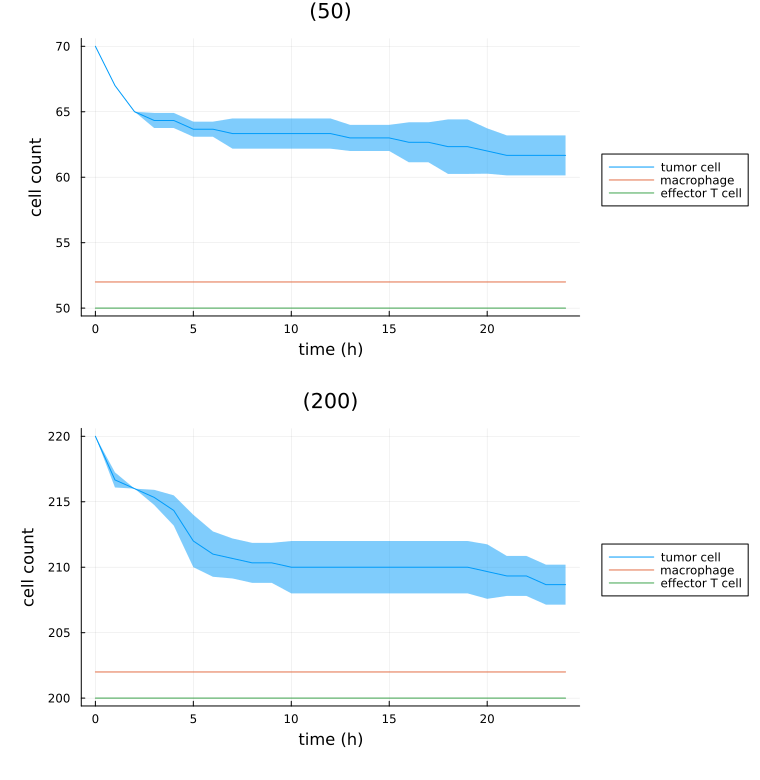
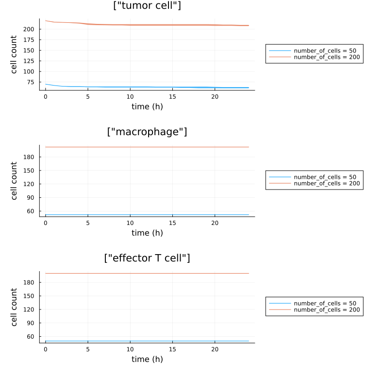
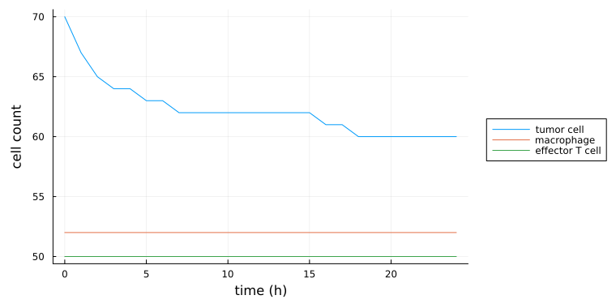

Analyzing output
Read a finished simulation's cells, substrates, graphs and population counts back into Julia, and plot them.
Install dependencies
pkg> add PlotsLoading output
PhysiCellSnapshot
The base unit of PhysiCell output is the PhysiCellSnapshot. Each records the output-folder path, its index in the output sequence, the simulation time, and optionally the cell, substrate, and mesh data at that snapshot. Index it by integer, or by :initial / :final.
snapshot = PhysiCellSnapshot(1, :final; include_cells=true) #! last save of simulation 1
snapshot = PhysiCellSnapshot(Simulation(1), 3) #! the 4th save, no data loaded yetPassing a simulation ID or a Simulation is PhysiCellModelManager.jl's database-identity entry point: it asserts the project is initialized, resolves the ID to an output folder, and delegates to the folder-based constructor in PhysiCellOutput.jl. It returns missing (with a printed message) when the files are not there, e.g. for a pruned simulation.
PhysiCellSequence
A PhysiCellSequence is the full sequence of snapshots for a single simulation, plus the output-folder path and simulation metadata.
sequence = PhysiCellSequence(1; include_cells=true) #! every snapshot of simulation 1Loading data into a snapshot or sequence
A snapshot or sequence built without the include_* keywords carries no data. loadCells!, loadSubstrates!, loadMesh! and loadGraph! fill one in place, each storing its result in the matching field. loadCells! and loadSubstrates! read the cell-type names, the cell data labels, and the substrate names from the simulation's own XML, so what you get back is already labeled and you never compute those and pass them in.
snapshot = PhysiCellSnapshot(1, :final)
loadCells!(snapshot)
loadSubstrates!(snapshot)
loadMesh!(snapshot)
loadGraph!(snapshot, :neighbors) #! one of :neighbors, :attachments, :spring_attachments
snapshot.cells #! DataFrame, a row per cell; :cell_type holds names, not PhysiCell's integer codes
snapshot.substrates #! DataFrame, a column per substrate, named as in the XML
snapshot.mesh #! Dict of the voxel centers: "x", "y", "z"
snapshot.neighbors #! the graph just loaded; likewise .attachments and .spring_attachments
sequence = PhysiCellSequence(1)
loadCells!(sequence) #! all four also take a whole sequenceDecided. The path-based loaders and the snapshot/sequence types live in PhysiCellOutput.jl; PhysiCellModelManager.jl keeps only the layer that turns a simulation ID or a Simulation into an output folder, and extends PhysiCellOutput's own constructors. Rejected. Wrapping them in a PCMM-owned type, which would have renamed the public constructors that src/analysis/ is typed against.
cellDataSequence
cellDataSequence follows individual cells through time. It accepts a simulation ID (<:Integer), a ::Simulation, or a ::PhysiCellSequence, together with one label (::String) or several (::Vector{String}), and returns a dictionary keyed by integer cell ID whose values are named tuples with the requested labels plus :time.
Each call to cellDataSequence loads all the data unless a PhysiCellSequence is passed in. Loading simulation data is not fast, so build the sequence once and reuse it if you are going to ask several questions of the same simulation.
data = cellDataSequence(1, "position")
#! an Nx3 matrix for the N integer-indexed outputs (ignores the `initial_*` and `final_*` files)
cell_78_positions = data[78].position
cell_78_times = data[78].time
using Plots
plot(cell_78_times, cell_78_positions[:,1]) #! the x-coordinate of cell 78 over timePopulation counts and time series
populationCount counts the cells in one snapshot and returns a Dict from cell type name to count; dead cells are excluded unless include_dead=true. finalPopulationCount is the shorthand for a whole simulation's last snapshot — on a Monad it returns the mean count across replicates. populationTimeSeries returns the whole curve instead: a SimulationPopulationTimeSeries for a Simulation and a MonadPopulationTimeSeries for a Monad, both of which also accept the result of run. Both index by cell type name and by "time". A simulation's series stores a plain Vector of counts per cell type; a monad's stores a named tuple of counts, mean and std over its replicates.
A SimulationPopulationTimeSeries built from a Simulation or a simulation ID writes itself to simulations/<id>/summary/ and is read back from there on the next call, so re-running an analysis does not re-walk every snapshot. include_dead=true is cached to its own file rather than overwriting the live-only one. A snapshot whose files are gone yields missing from populationCount and is skipped in the series, so pruned output degrades the curve rather than killing the call.
populationCount(PhysiCellSnapshot(1, :final)) #! Dict("cancer" => 1234, "cd8" => 56, ...)
finalPopulationCount(1)["cancer"] #! same count, without naming the snapshot
spts = populationTimeSeries(Simulation(1)) #! a SimulationPopulationTimeSeries
spts.time #! the save times
spts["cancer"] #! "cancer" counts, one per save time
mpts = populationTimeSeries(Monad(1)) #! a MonadPopulationTimeSeries
mpts["cancer"].mean #! across replicates; also .std and .countsDecided. It lives in src/analysis/population.jl because it answers a question about a finished run; the summary statistics used by calibration and sensitivity analysis delegate to it rather than defining their own count. Rejected. A separate endpoint-count function per consumer.
Simulation runtime
simulationRuntime returns how long PhysiCell took to reach a snapshot, as a Dates.Nanosecond. Given a Simulation, a simulation ID, or a run result it reports the final snapshot — i.e. the whole simulation.
using Dates, Statistics
runtime = simulationRuntime(1) #! a Nanosecond
println(canonicalize(runtime)) #! e.g. 2 minutes, 53 seconds, 748 milliseconds
runtimes = simulationRuntime.(1:4)
Nanosecond(round(mean([r.value for r in runtimes]))) #! mean runtime over four simulationsPopulation plots
Group by Monad
Call plot on a Simulation, Monad, Sampling, or a run result (but not a sensitivity analysis) to get a figure of panels. Each panel is one Monad — replicates with the same parameters — and plots mean ± SD per cell type. A panel's title defaults to the parameter values that distinguish its monad from the others.
That default title is the monad's row in simulationsTable with the ID columns removed. The table drops whatever is constant across the sampling, so what is printed is exactly what varied — a two-way sweep gives titles like (1440.0, 0.002), and an input folder that differs between monads appears there too. Panels are ordered by that same tuple.
using Plots
plot(sampling) #! one panel per monad
plot(sampling; include_dead=true) #! count dead cells too
plot(sampling; include_cell_type_names="cancer") #! restrict to one cell type
plot(sampling; exclude_cell_type_names="cancer") #! or drop one
plot(sampling; time_unit=:h) #! x-axis in hoursOne panel per Monad, titled with what varied; each cell type is a series and the shaded band its standard deviation across replicates.

include_cell_type_names and exclude_cell_type_names also accept a Vector{String}. If an entry of include_cell_type_names is itself a Vector{String}, those cell types are summed into one series — the way to add a total alongside its components.
using Plots
#! total tumor count alongside its epithelial ("epi") and mesenchymal ("mes") components
plot(Monad(1); include_cell_type_names=["epi", "mes", ["epi", "mes"]])These are Julia plot recipes (see RecipesBase.jl), so any standard plotting keyword can be passed through.
using Plots
colors = [:blue :red] #! note the absence of a `,` or `;`: this is how Julia passes per-series values
plot(Simulation(1); color=colors, include_cell_type_names=["cd8", "cancer"]) #! cd8 blue, cancer redGroup by cell type
plotbycelltype inverts the grouping: one panel per cell type, with every monad as a series inside it. It works on a Simulation, Monad or Sampling, and on the MMOutput that run returns; a Trial is refused, with an error naming what to pass instead. It takes everything listed above for plot. plotbycelltype! is its mutating form, drawing into an existing plot instead of creating one.
using Plots
plotbycelltype(Sampling(1); include_cell_type_names=["epi", "mes", ["epi", "mes"]], color=[:blue :red :purple], labels=["epi" "mes" "both"], legend=true)The same simulations as the figure above, regrouped — one panel per cell type, each series a Monad.

Note the inversion when reading a legend: in plot a series is a cell type, in plotbycelltype a series is a monad.
A single Simulation has no replicates to summarize, so it plots one line per cell type with no band.

Decided. The panel list comes from the first simulation in the sampling whose initial XML is still on disk, so a pruned replicate is stepped over rather than ending the plot; a replicate with no output is dropped from the monad's mean and band instead of being counted as zero. Decided. A Trial now raises an ArgumentError naming its samplings, and a trial with no readable output anywhere raises rather than drawing an empty figure — which used to be indistinguishable from a broken recipe. Rejected. Taking the panel list from the config file: the curves come from the output XML, and a list read from a second source is one that can disagree with them.
Regenerating these figures. They are committed under docs/src/assets/ rather than rendered during the docs build, which has no compiled PhysiCell. Run julia --project=docs docs/generate_figures.jl <path/to/project> to remake them after changing a plot recipe.
Substrate analysis
Two types summarize substrate concentrations over time: one averaged over the whole domain, one averaged over the space neighboring each cell type.
AverageSubstrateTimeSeries
An AverageSubstrateTimeSeries gives the time series for the average substrate across the entire domain. Index it by substrate name.
simulation_id = 1
asts = PhysiCellModelManager.AverageSubstrateTimeSeries(simulation_id)
using Plots
plot(asts.time, asts["oxygen"])ExtracellularSubstrateTimeSeries
An ExtracellularSubstrateTimeSeries gives the time series for the average substrate concentration in the extracellular space neighboring all cells of a given cell type. Index it by cell type, then by substrate — below, the average IFNg concentration experienced by CD8+ T cells.
simulation_id = 1
ests = PhysiCellModelManager.ExtracellularSubstrateTimeSeries(simulation_id)
using Plots
plot(ests.time, ests["cd8"]["IFNg"])Motility analysis
motilityStatistics returns the time alive, distance traveled, and mean speed for each cell in the simulation, split among the cell types that cell assumed over the run (or at least at the save times). Pass direction to consider only one coordinate axis.
The cell type at the start of each save interval is the one credited with that interval, and speed comes from net displacement over the interval rather than path length — so a cell that doubles back inside one save interval reads as slower than it was.
simulation_id = 1
mss = motilityStatistics(simulation_id)
all_mean_speeds_as_mes = [ms["mes"].speed for ms in mss if haskey(ms, "mes")] #! speeds while "mes"
all_times_as_mes = [ms["mes"].time for ms in mss if haskey(ms, "mes")] #! time spent as "mes"
mean_mes_speed = all_mean_speeds_as_mes .* all_times_as_mes |> sum #! weighted average...
mean_mes_speed /= sum(all_times_as_mes) #! ...finishedmss = motilityStatistics(simulation_id; direction=:x) #! only movement in the x directionPair correlation function
pcf accepts a PhysiCellSnapshot, a PhysiCellSequence, or a Simulation. An Integer first argument is treated as a simulation ID; follow it with an index (an Integer, or :initial / :final) to compute at one snapshot rather than over the whole simulation. Next comes the center cell type (a String or Vector{String}), then optionally the target cell type; omit the target and the centers are used, giving a non-cross PCF. The center and target sets must be identical or disjoint. include_dead=false keeps to living cells — pass true for all of them, or a tuple to set centers and targets separately — and dr=20.0 is the width of the radial bins in micrometers. Call it as PhysiCellModelManager.pcf, or as plain pcf once using PairCorrelationFunction has been called.
Sometimes referred to as radial distribution functions, the pair correlation function (PCF) computes the density of target cells around center cells. If the two sets of cells are the same (centers = targets), this is called PCF; if they differ, this is sometimes called cross-PCF. Both come from the same call.
Output
pcf returns a PCMMPCFResult with two fields. time is always a vector of the time points at which the PCF was computed, even for a single snapshot. pcf_result is a PairCorrelationFunction.PCFResult with fields radii (the bin cutoffs) and g (a vector or a length(radii)-1 by length(time) matrix of PCF values).
Plotting
Pass a PCMMPCFResult straight to plot to reach PairCorrelationFunction.jl's plotting interface. Pass several, or a Vector{PCMMPCFResult}, and they are treated as stochastic realizations of the same PCF and summarized. See the PairCorrelationFunction.jl documentation for more details.
PhysiCellModelManager.jl adds two keyword arguments: time_unit::Symbol = :min (also :s, :h, :d, :w, :mo, :y; only relevant when the result has more than one time point) and distance_unit::Symbol = :um (also :mm, :cm).
PairCorrelationFunction.jl's own colorscheme keyword also works. PhysiCellModelManager.jl overrides that package's default of :tofino with :cork, so that white represents values near one — the value at which the targets are neither clustered near nor excluded from the centers.
Examples
simulation_id = 1
#! `using PairCorrelationFunction` obviates the need to prefix with `PhysiCellModelManager`
result = PhysiCellModelManager.pcf(simulation_id, "cancer", "cd8")
plot(result) #! heatmap of proximity of (living) cd8s to (living) cancer cells throughout simulation 1monad = Monad(1) #! let's assume that there are >1 simulations in this monad
#! one vector of PCF values for each simulation at the final snapshot
results = [PhysiCellModelManager.pcf(simulation_id, :final, "cancer", "cd8") for simulation_id in simulationIDs(monad)]
plot(results) #! line plot of average PCF values against radius across the monad +/- 1 SDmonad = Monad(1) #! let's assume that there are >1 simulations in this monad
#! one matrix of PCF values for each simulation across all time points
results = [PhysiCellModelManager.pcf(simulation_id, "cancer", "cd8") for simulation_id in simulationIDs(monad)]
#! heatmap of average PCF values, time on the x-axis and radius on the y-axis; averages omit the
#! NaN values that can occur at higher radii
plot(results)Graph analysis
Every PhysiCell simulation produces three directed graphs at each save time point. The vertices are the cell agents; the edges are :neighbors (the cells overlap, based on their positions and adhesion radii), :attachments (manually-defined attachments between cells), and :spring_attachments (spring attachments formed automatically using attachment rates). connectedComponents is what PhysiCellModelManager.jl computes on them; load a graph with loadGraph! (provided by PhysiCellOutput.jl) for any other analysis.
Each of these graphs is expected to be symmetric — if cell A is attached to cell B, then cell B is attached to cell A — but PhysiCellModelManager.jl holds the data in a directed graph nonetheless.
Examples
All the examples that follow assume a PhysiCellSnapshot called snapshot.
simulation_id = 1
index = :final
snapshot = PhysiCellSnapshot(simulation_id, index)
#! defaults to the :neighbors graph, all cells, and excluding dead cells
connected_components = connectedComponents(snapshot)The result is a Dict whose only key is a single vector of all the cell type names, and whose value is a vector of vectors: each inner vector holds the cell IDs of one connected component, wrapped in the AgentID type.
#! pass a vector of vectors of cell type names to compute components within subsets of cells
subset_1 = ["cd8_active", "cd8_inactive"]
subset_2 = ["cancer_epi", "cancer_mes"]
connected_components = connectedComponents(snapshot; include_cell_type_names=[subset_1, subset_2])
connected_components[subset_1] #! keyed by the vectors themselves, not by the strings "subset_1"Including dead cells is possible but not recommended: dead cells automatically clear their neighbors and both kinds of attachments, so they arrive as isolated vertices and inflate the component count.
connected_components = connectedComponents(snapshot; include_dead=true)connected_components = connectedComponents(snapshot)
connected_components_1 = connected_components |> #! julia's pipe operator
values |> #! get the value for each key
first |> #! the components for the first subset (here, the only one)
first #! the first connected component of that subset
loadCells!(snapshot) #! make sure the cell data is loaded
cells_df = snapshot.cells
agent_ids = DataFrame(ID=[a.id for a in connected_components_1]) #! IDs in the component
component_df = rightjoin(cells_df, agent_ids, on=:ID) #! keep only the rows in the componentSee also
- Movies — turning a simulation's SVG snapshots into
output/out.mp4. - Post-processing and quantities of interest — computing and storing per-simulation quantities while a run is in flight, before pruning.